MCU Input/Output
How a microcontroller talks to the physical world: digital pins that drive and read wires, converters that measure and produce voltages, and PWM to control power efficiently.
Digital I/O: GPIO
Digital logic
Two voltage levels, one bit
A computer only understands yes and no: 1 and 0. On a wire we represent that with voltage: "lots of voltage" means 1, "almost none" means 0.
Think of a light switch rather than a dimmer. The chip does not care whether the wire is at 97% or 100% of the supply: it is simply "on". That tolerance is why digital circuits keep working even when the wire is noisy.
- High voltage (typically the supply, VS) is logic '1'; low voltage (typically ground, 0 V) is logic '0'.
- The receiver makes a threshold decision. The simplest rule:
V > VS/2 ⇒ '1' otherwise '0'
- Noise that does not push the voltage across the threshold is removed completely: the bit comes out exactly as sent. In analog signals, noise stays in the signal forever.
- Real datasheets give two limits rather than one: VIL,max (highest voltage guaranteed to read '0') and VIH,min (lowest guaranteed '1'), often around 0.3·VDD and 0.7·VDD. In between, the reading is not guaranteed.
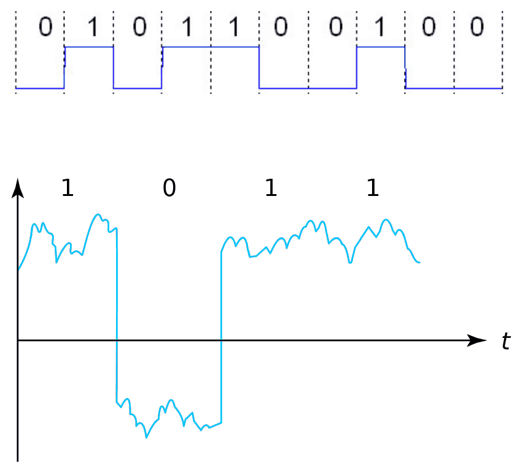
General Purpose Input/Output (GPIO)
Pins whose job software decides
A GPIO is a pin on the chip whose role your program chooses. As an output it is a tiny switch that connects the wire to the supply or to ground. As an input it is a tiny voltmeter that only ever answers "high" or "low".
Buttons, status LEDs, chip-select lines, interrupt signals from sensors: they are all GPIOs.
- Three basic operations, all under software control: set the line high ('1'), set it low ('0'), read its logic level.
- The nRF52832 has 32 GPIOs, labelled
P0.00toP0.31(one port, P0). - Pins are multiplexed:
P0.02is alsoAIN0(an ADC input),P0.00/P0.01double asXL1/XL2for a 32.768 kHz crystal, andP0.09/P0.10as the NFC antenna pins. Firmware decides which function is active. - Pins are configured through memory-mapped registers. On the nRF52,
PIN_CNF[n]sets direction, input buffer, pull resistor, drive mode and sense;OUTSET/OUTCLRchange outputs andINreads them. In Zephyr you callgpio_pin_configure()andgpio_pin_set()instead.
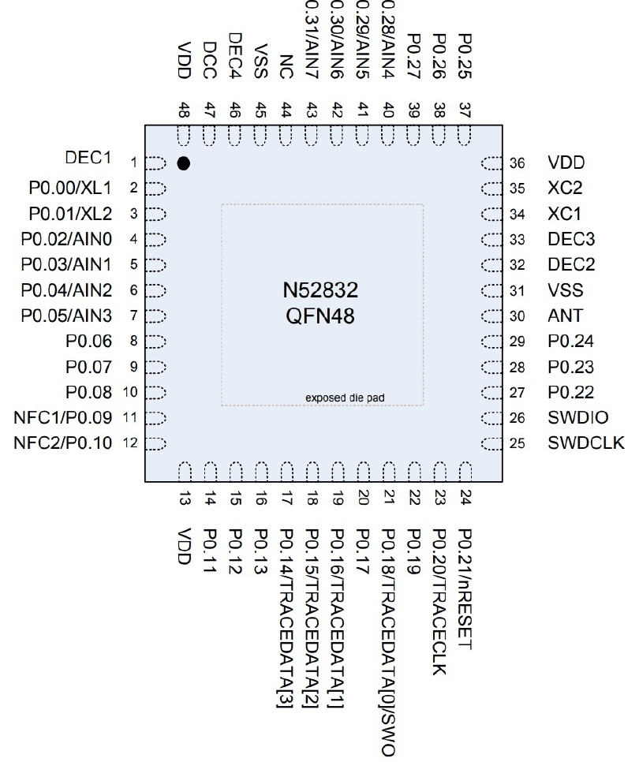
GPIO output: push-pull mode
Actively driving both levels
Picture the pin behind two doors: one opens to the supply (VS), the other to ground. In push-pull mode exactly one door is open at any time.
Write '1' and the MCU opens the top door: it pushes the pin up. Write '0' and it opens the bottom door: it pulls the pin down. The pin is always firmly held one way or the other.
- The MCU drives the output by actively connecting it either to VS or to ground.
- Implemented with two MOSFET switches: a high-side switch (PMOS) to VS and a low-side switch (NMOS) to ground, the classic CMOS output stage.
- An input of '1' closes the upper switch and simultaneously opens the lower one; '0' does the opposite. Both closed would short VS to ground inside the chip, so that never happens.
- Low resistance in both directions gives strong, fast rising and falling edges.
- Push-pull is often the default output mode, and it is selected in software.
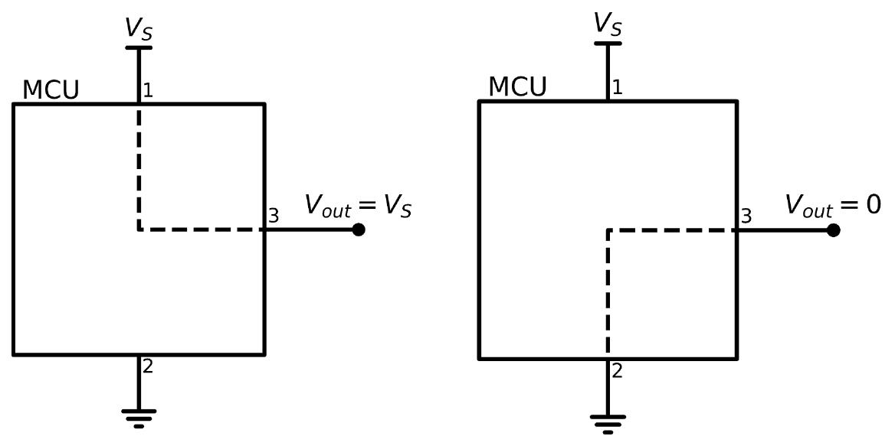
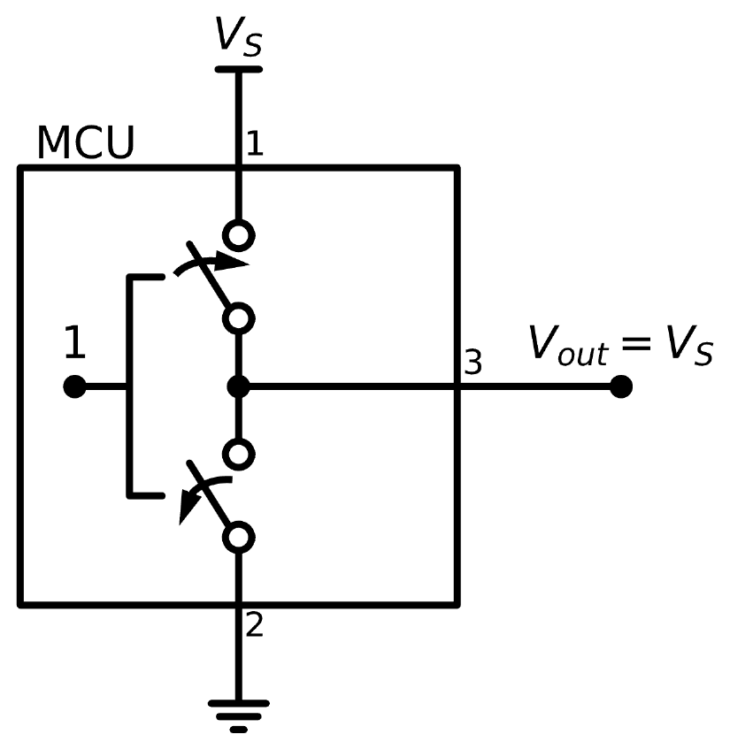
GPIO as a current source and sink
Using a pin as a (small) power switch
A GPIO can switch a small load such as an LED directly. As a source, the pin at '1' pushes current out through the LED to ground. As a sink, the LED hangs from the supply and the pin at '0' swallows the current, so the logic is reversed.
But pins are weak: a few milliamps. Enough for an indicator LED, nowhere near enough for a motor.
- Communication signals are low-current; powering components is not.
- Source: current flows out of the pin. Pin '1' ⇒ LED on.
- Sink: current flows into the pin and the pin closes the circuit to ground. Pin '1' ⇒ LED off, '0' ⇒ LED on (active-low).
- Output current is limited, typically 2 to 12 mA per pin. Some MCUs have high-drive pins (e.g. 40 mA). There is usually also a limit on the total for all pins together.
- Pick the series resistor for the current you want:
R = (VS - VF) / I (3.3 V - 2.0 V) / 4 mA ≈ 330 Ω
- High-power loads (motors, relays, LED strips) are connected directly to the power source and only switched by the GPIO via a transistor or driver IC.
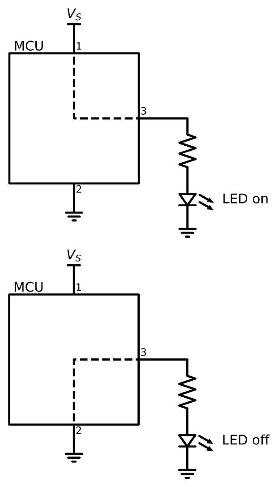
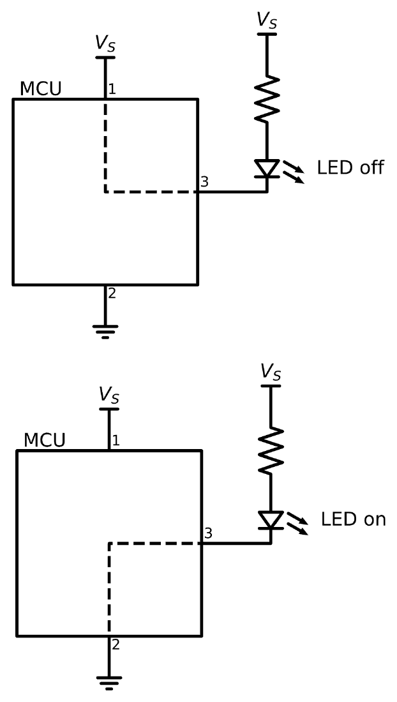
Two MCUs on one line
Why two push-pull outputs must never disagree
Several devices often share one wire. Now imagine two push-pull outputs on it: one opens its door to the supply, the other opens its door to ground. The supply is now connected straight to ground through both chips.
That is a short circuit: lots of current, heat, and a wire whose value is nonsense.
| MCU1 | MCU2 | Vout |
|---|---|---|
| 0 | 0 | 0 |
| 0 | 1 | SHORT |
| 1 | 0 | SHORT |
| 1 | 1 | 1 |
- In a short, the current is limited only by the on-resistance of the two transistors (a few tens of ohms), far above any pin rating.
- The line settles at some in-between voltage set by those two resistances: not a valid logic level.
- Rule: only one device should drive a line at a time. Two output states are not enough; we need a way to disconnect the output.
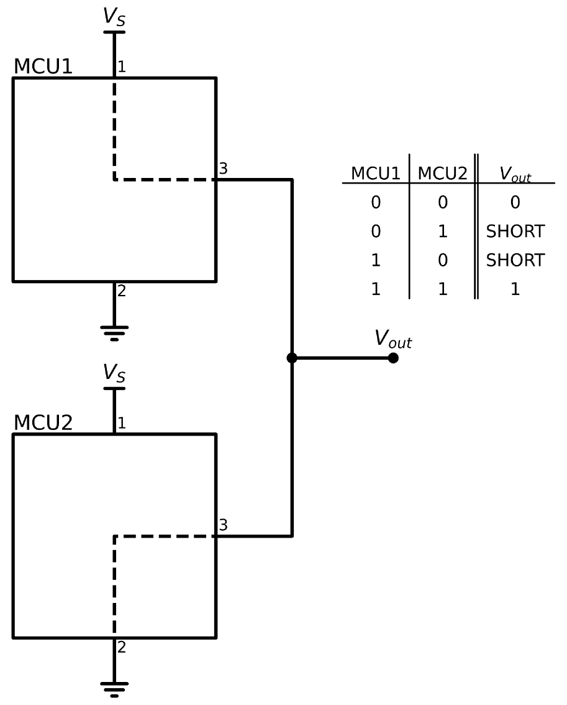
Tri-state logic and GPIO output states
'0', '1', and "not here"
Add a third option: both doors closed. The pin is neither pushed nor pulled; electrically it is simply not there. This is called high impedance, or Hi-Z.
It is like a meeting where people who are not speaking keep quiet. A device that has nothing to say steps off the line so someone else can drive it.
- Three states: logical '0' (low voltage), logical '1' (high voltage), and Hi-Z (disconnected).
- A tri-state buffer passes IN to OUT when ENABLE = 1, and disconnects OUT when ENABLE = 0. It is built from MOSFETs switched fully off, whose resistance is so high that no current flows: equivalent to an open circuit.
- A GPIO output therefore has two controls: the output value A and the enable EN. It can be actively pushed to '1', actively pulled to '0', or disabled (Hi-Z).
- Hi-Z is not 0 V. A Hi-Z pin has no voltage of its own; whatever else is connected to the line decides it.
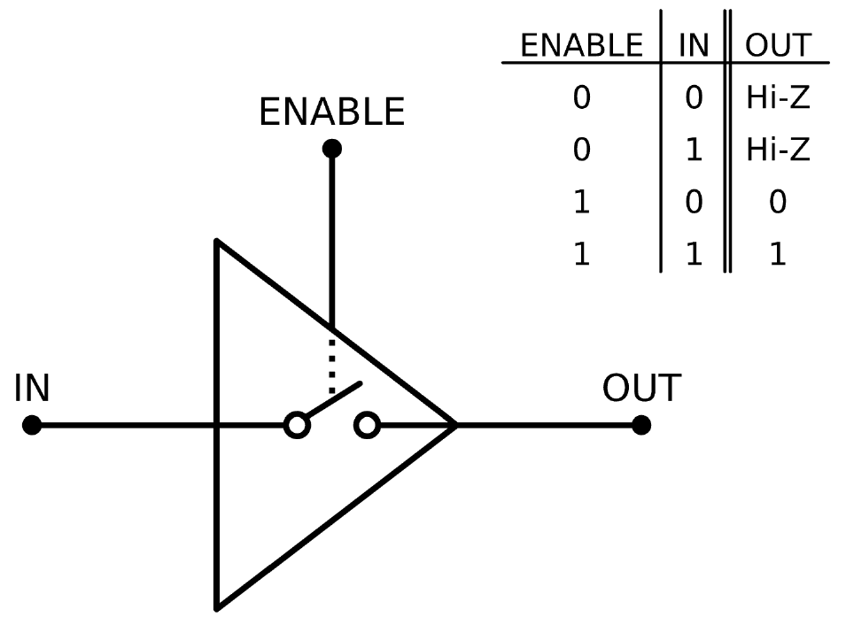
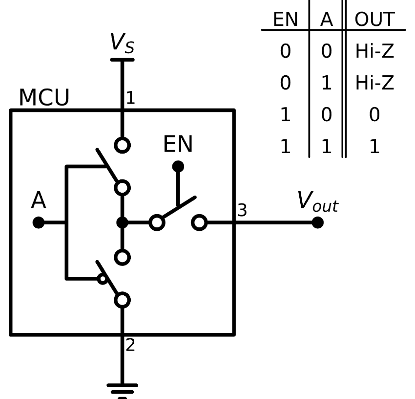
GPIO input and input hysteresis
Reading a pin without flickering
Reading a pin means asking: "is the voltage above half the supply?" The trouble starts when a slow, noisy signal hovers right around that halfway mark: the answer flickers yes, no, yes, no.
Hysteresis fixes this the way a thermostat does: heat on below 19°, off above 21°, instead of clicking on and off around 20° every few seconds. Two thresholds, with a "keep what you had" zone in between.
- A comparator compares two analog voltages and outputs '0' or '1' depending on which is larger. A GPIO input can be built by comparing the pin to VS/2.
- Noise near the threshold causes several quick successive changes (glitches): one button press counted many times, spurious interrupts.
- Input hysteresis (a Schmitt trigger) uses two thresholds:
'0' → '1' when V > VS/2 + VHBetween the two, the output keeps its previous value (it has memory).
'1' → '0' when V < VS/2 - VH - Noise smaller than the band (2·VH wide) can no longer cause toggling. The cost is a small shift in when the switch happens.
- Mechanical button bounce (large swings for a few ms) still needs debouncing, in software or with an RC filter.
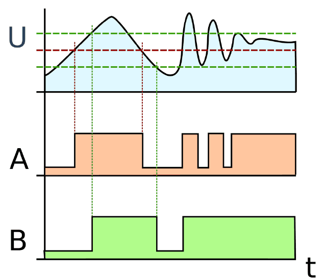
Input mode and hardwired inputs
Listening to another chip, or to a fixed wire
An input is the listening end. When one MCU's enabled output is wired to another MCU's input, the input simply reads what the output says.
An input can also be soldered permanently to the supply or to ground, like a tiny switch set at the factory. Two boards can run exactly the same firmware and still behave differently, because each reads its own fixed pins to find out who it is.
- With the sender enabled (EN = 1), the receiver reads IN = A.
- An input buffer has very high input impedance: it senses the voltage but draws almost no current, so it does not disturb the line.
- Hardwired input: tied to a constant value on the circuit board. Uses:
- Permanent configuration, e.g. boot-mode strapping pins, or address-select pins on sensors so two identical sensors can share a bus.
- Identification: two MCUs with the same software, one with Pin 3 tied to '0' and the other to '1'. Reading Pin 3 is a form of self-identification. n pins give 2n IDs.
- A hardwired pin must stay an input. Driving it as a push-pull output to the opposite level would short it to the rail.
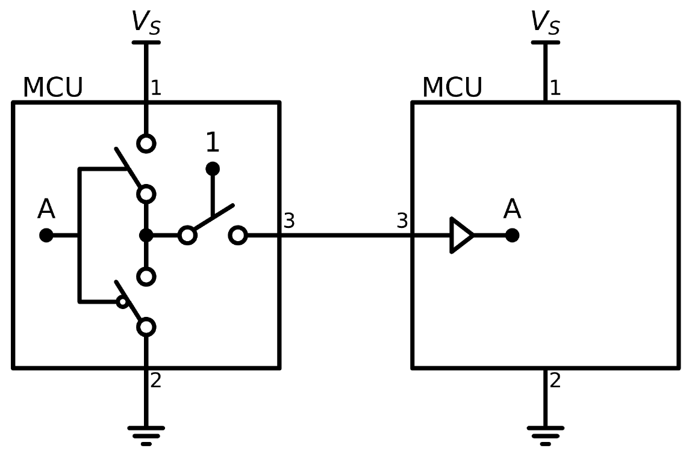
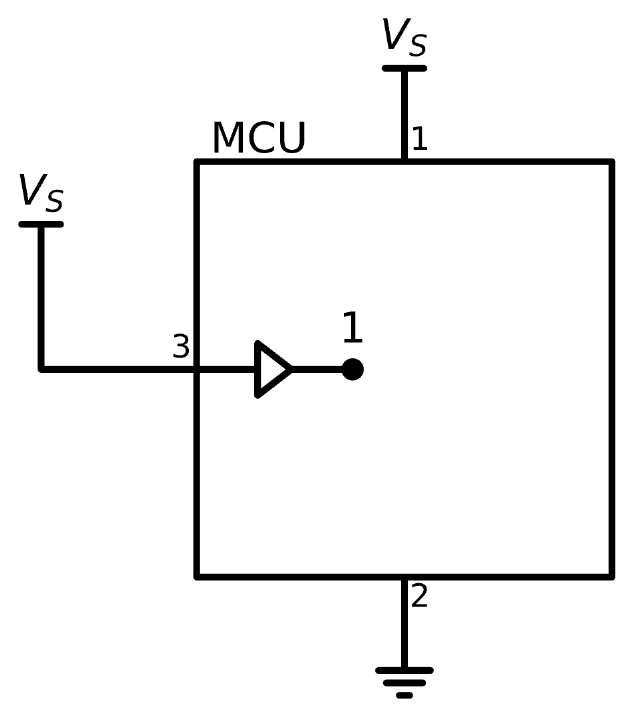
Reading a Hi-Z output: floating inputs
When nobody drives the wire
What if nobody is talking? The output is disconnected (Hi-Z) and the input only listens, so the wire is connected to... nothing. Asking its value is like asking a question in an empty room and trying to interpret the echo.
The pin picks up whatever electrical noise is around it and reads 0, then 1, then 0. That is a floating pin.
- Hi-Z output + high-impedance input: nothing defines the line voltage. The input is undefined: it can be 0, 1, or switch between them.
- The pin has a few pF of capacitance and an enormous resistance to everything, so charge couples in from neighbouring signals, mains wiring or a nearby hand. It acts as a tiny antenna.
- Consequences: random readings, interrupts firing on their own, and extra current draw, because a CMOS input sitting near VS/2 has both input transistors partly on.
- Hence the rule: never leave a line you read floating. Unused pins are disconnected, pulled, or driven. (On the nRF52, a pin's input buffer is disconnected after reset for exactly this reason.)
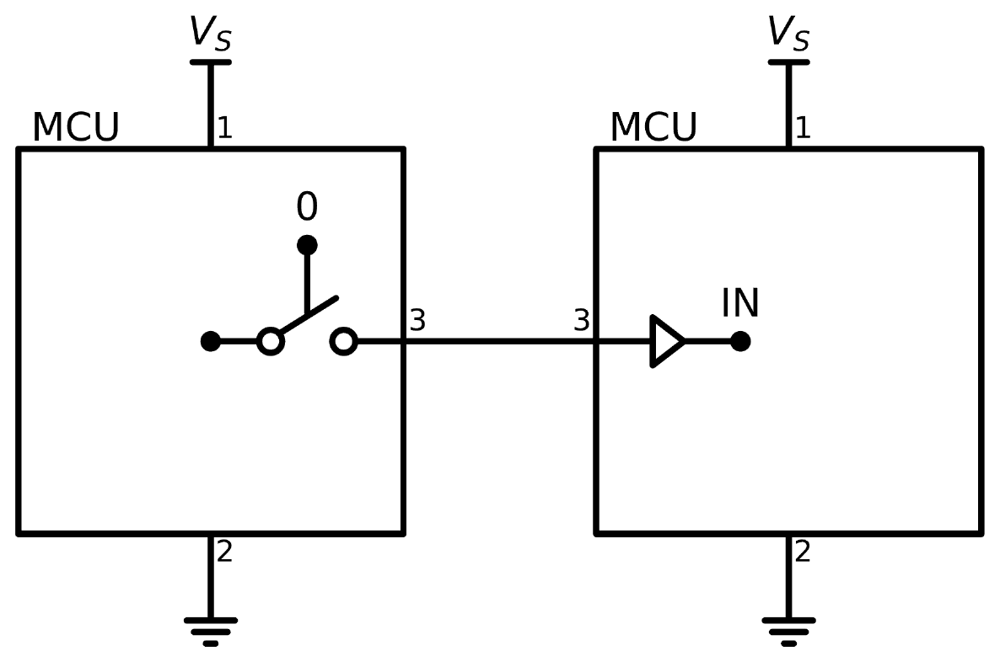
Pull-up and pull-down resistors
A default value for when nobody drives the line
A pull-up resistor is a weak spring that holds the line at '1' whenever nobody touches it. Any device that actively drives the line overpowers the spring easily.
A pull-down is the same spring pulling towards '0'. Either way, the line is never left floating.
- Nobody drives: the pull-up raises the line to '1'.
- Driven to '1': both ends of the resistor are at VS: no current, line is '1'.
- Driven to '0': the full VS is across the resistor, current flows, line is '0' (the driver's on-resistance is far smaller than R).
I = VS / R 3.3 V / 10 kΩ = 0.33 mA
- Output with pull-up: EN = 0 ⇒ IN = 1 (the resistor decides); EN = 1 ⇒ IN = A.
| EN | A | IN |
|---|---|---|
| 0 | 0 | 1 |
| 0 | 1 | 1 |
| 1 | 0 | 0 |
| 1 | 1 | 1 |
- Choosing R is a trade-off. Smaller R pulls harder: faster rising edges (the line capacitance charges with τ = R·C) and better noise immunity, but more current whenever the line is low. MCUs provide weak internal pull-ups/pull-downs (the nRF52832's are about 13 kΩ).
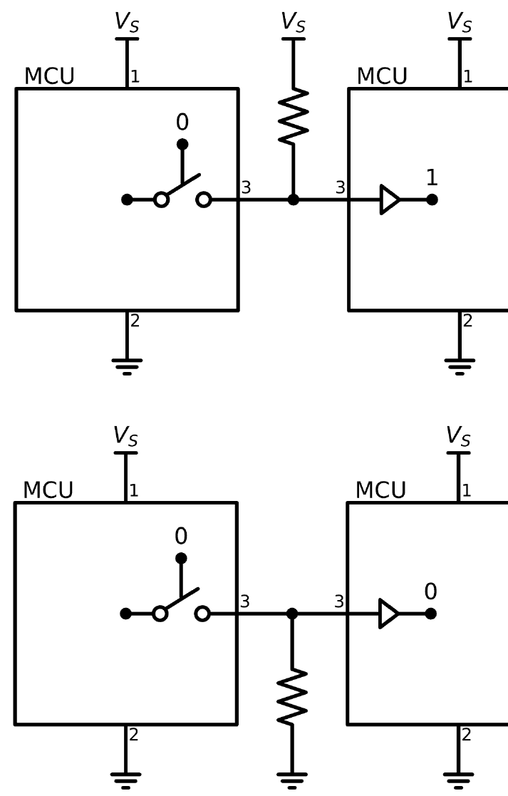
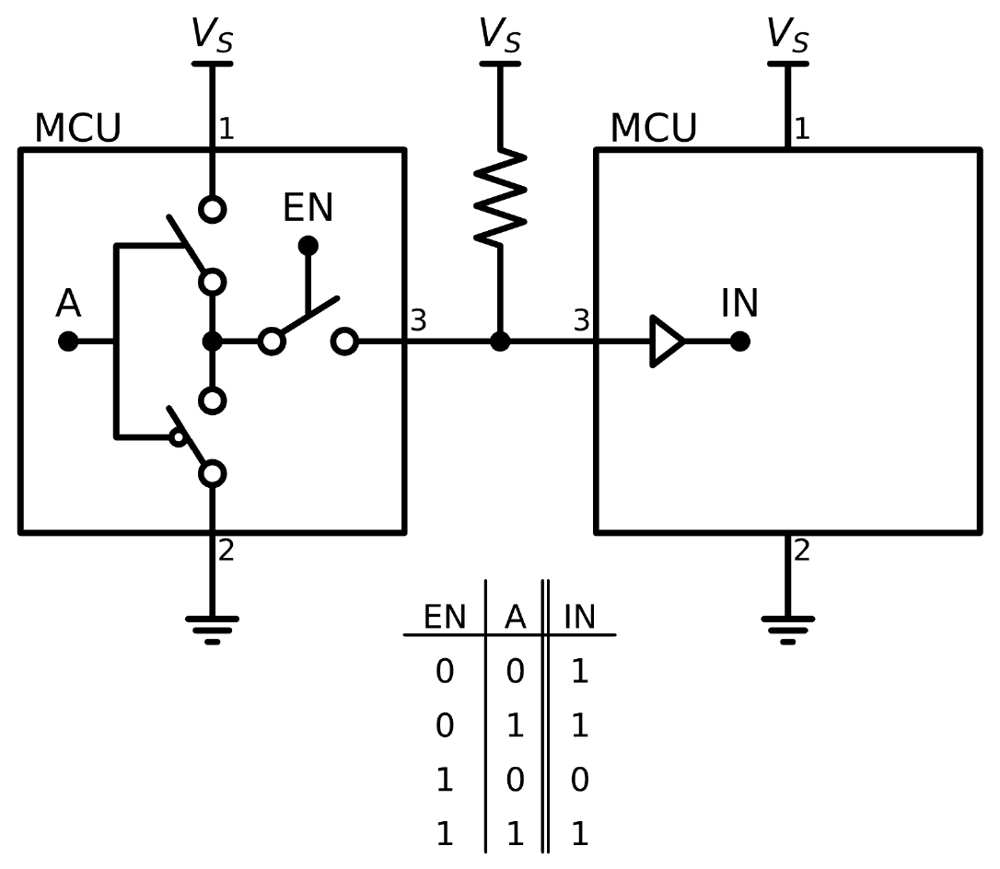
Multiple MCUs and open-drain mode
Sharing a line safely
Tri-state helps, but a single bug that enables two outputs can still cause a short. So let's make it impossible: remove the top door entirely. Each device can only pull the line down or let go, and a pull-up resistor lifts the line when everyone lets go.
Like the stop-request cord on a bus: anyone can pull it, and it is only released when nobody is pulling.
- Several push-pull outputs plus a pull-up are fine if only one is enabled at a time, but shorts are still possible (see the SHORT rows in the slide table). Not safe enough.
- Open-drain has two states: logical '0' (actively pulled low) and Hi-Z. A '1' is produced indirectly by the pull-up resistor (external or internal).
- The line behaves as a wired-AND: it is '1' only if every device lets go, and any device can force '0'. No two drivers can ever fight, so it is safe from shorts.
- The name: the drain of the low-side NMOS transistor is left "open" instead of being tied to a high-side transistor.
- Used where many devices share a line: I²C (SDA/SCL), shared interrupt and reset lines. The pull-up can also go to a different voltage for simple level shifting (within the pins' tolerance).
- Trade-off: rising edges are slow (the pull-up charges the line capacitance), which limits the bus speed. On the nRF52 this mode is
DRIVE = S0D1("standard 0, disconnect 1"); Zephyr calls itGPIO_OPEN_DRAIN.
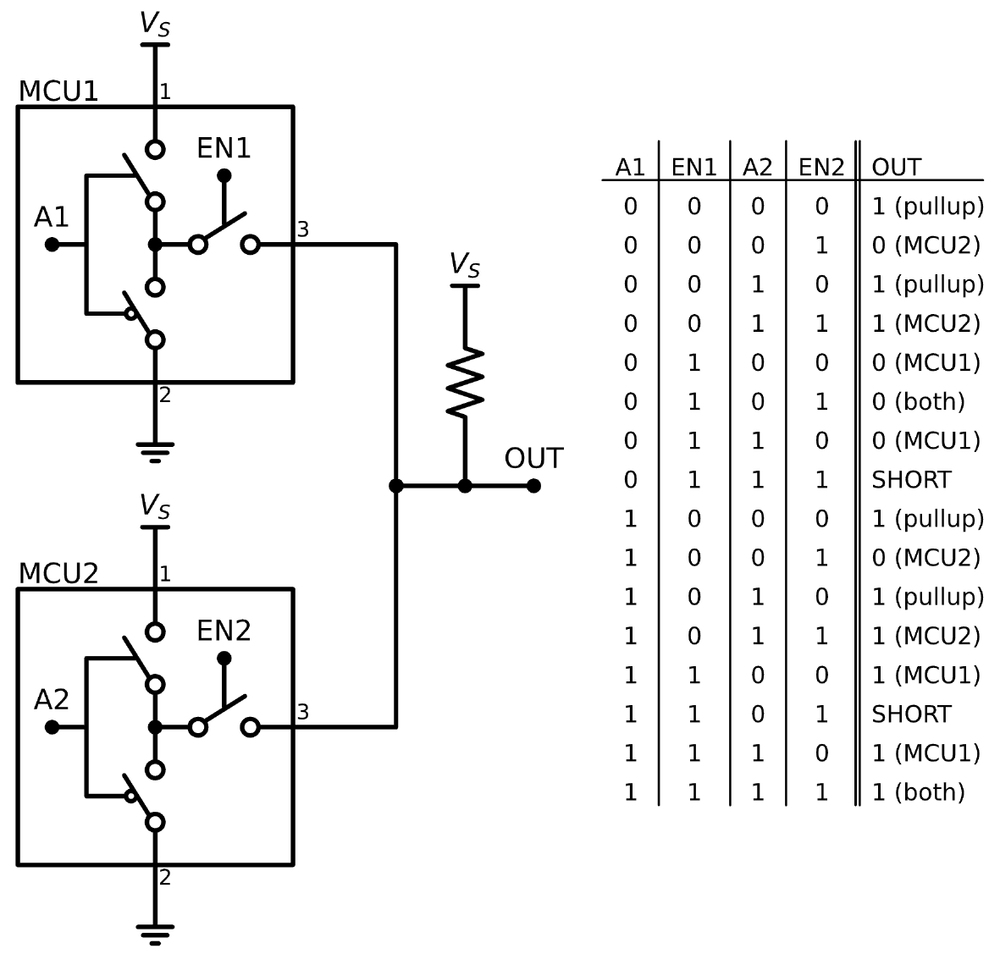
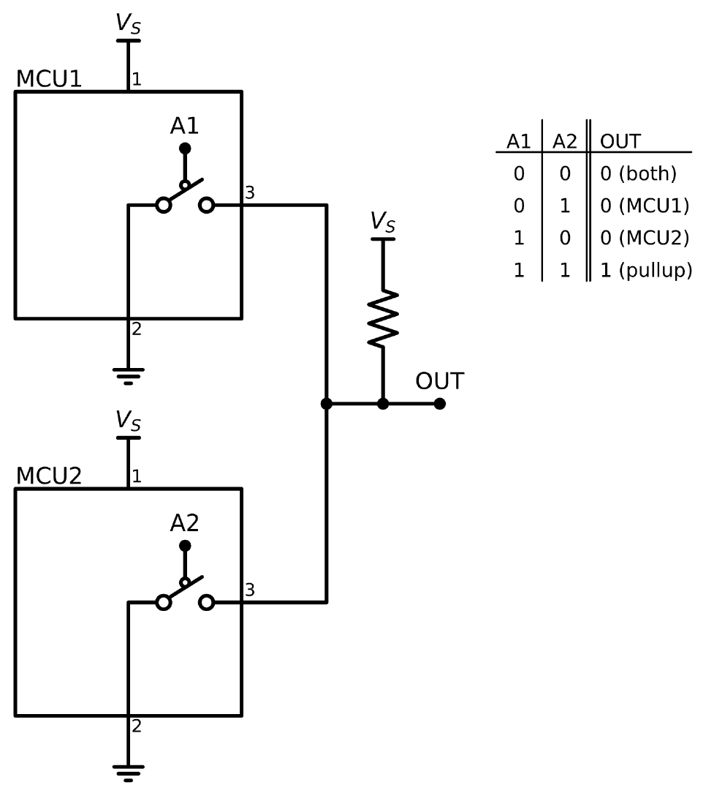
Analog I/O: ADC and DAC
Analog-to-Digital Converter (ADC)
From "high or low?" to "how much?"
A digital input only answers "high or low?". An ADC answers "how much?": it measures the voltage and hands you a number.
Think of a ruler with a fixed number of tick marks. The reading is always the nearest tick. A 12-bit ADC has 4096 ticks; an 8-bit one only 256.
- An ADC converts an analog signal (a voltage) into a digital signal (a series of numbers). It measures the input voltage and maps it to a number.
- Two steps: sampling (measure at discrete moments in time) and quantisation (round each measurement to one of a finite set of levels).
- The bit resolution M sets how many discrete values exist:
values = 2M, codes 0 … 2M - 1 12-bit: 0 to 4095
- MCUs typically integrate a successive-approximation (SAR) ADC. The nRF52832's SAADC offers 8, 10 or 12-bit resolution (14 bit with oversampling).
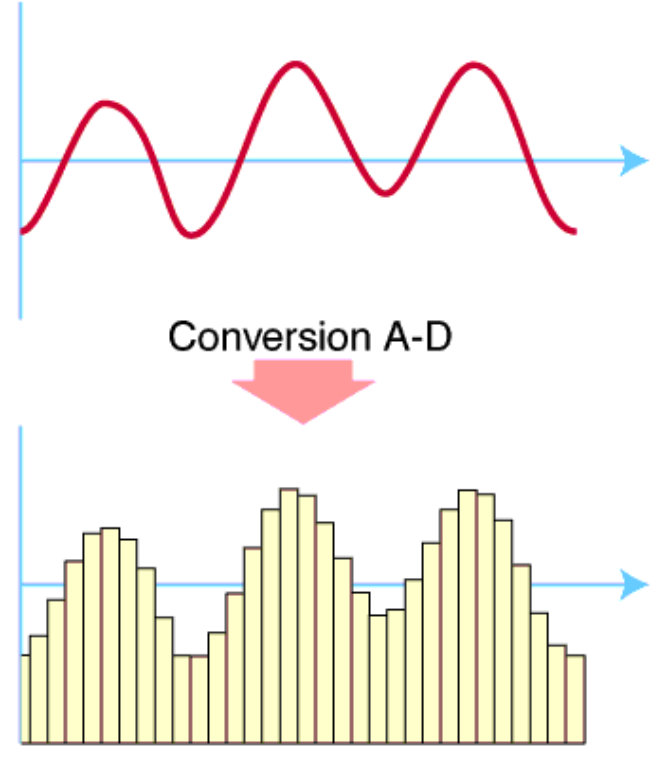
Single-ended ADC and quantisation
Measuring against ground, in steps of Q
"Single-ended" means the voltage is measured relative to ground. You pick a reference voltage Vref: the top end of the ruler. 0 V gives 0, Vref gives the biggest number.
Above Vref the ruler simply ends, and the reading is stuck at the maximum. That is called saturation.
- Measures Vin referenced to ground: the input and the ADC share a common ground.
- Vref is the maximum measurable value; it can equal the supply voltage or be lower. Voltages in [0, Vref] are mapped linearly to [0, 2M - 1]:
DOUT ≈ Vin / Vref · 2M if Vin ≥ Vref: DOUT = 2M - 1
- Example, 12-bit, Vref = 5 V: 0 V → 0, 2.5 V → 2048, 5 V → 4095, 6 V → 4095 (saturated).
- Quantisation error: each value is rounded to the closest integer, so measurements come in steps (quanta) of
Q = Vref / 2M error at most ±Q/2
| M | Vref | Q |
|---|---|---|
| 12 | 5 V | 1.22 mV |
| 12 | 2.5 V | 0.61 mV |
| 8 | 5 V | 19.5 mV |
| 8 | 2.5 V | 9.77 mV |
The trade-off this reveals: range vs resolution (next topic).
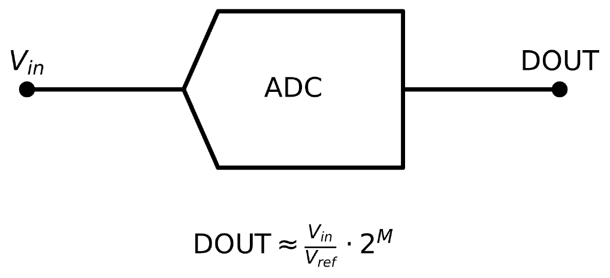
ADC: range vs resolution
Fit the ruler to the thing you measure
The ruler always has the same number of ticks. Make it longer (bigger Vref) and the ticks move further apart. To measure something small precisely, use a short ruler.
Just do not make it shorter than the thing you are measuring, or the end gets cut off.
- Assume an 8-bit ADC and a 5 V supply. Measuring [0, 5] V works with a 19.5 mV resolution.
- For a small [0, 1] V signal with subtle variations, Vref = 5 V is a poor fit: 19.5 mV may be too coarse, and codes 52 to 255 are never used.
- With Vref = 1 V you get 3.9 mV steps and use all codes 0 to 255. The slide makes 1 V from 5 V with a voltage divider:
Vref = 5 V · 20 k / (80 k + 20 k) = 1 V
- The price: anything above 1 V now saturates at 255.
- Open question from the slide: how do you measure a signal in [4, 5] V with 3.9 mV resolution? A small Vref alone does not help, since the whole signal is above it. The answer is the differential ADC.
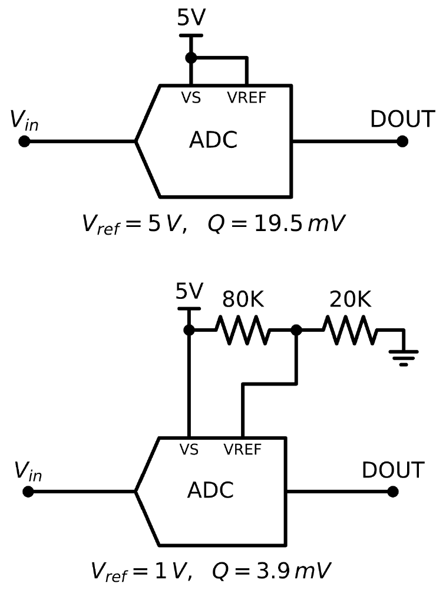
Differential ADC and removing a DC offset
Measure the difference, not the absolute value
Instead of measuring one wire against ground, measure the difference between two wires. Noise that hits both wires equally cancels out.
It also lets you subtract a big constant part. To weigh a cat, weigh yourself holding it, then subtract your own weight: you only care about the difference. That is how you measure a 4 to 5 V signal with fine steps.
- Measures VA - VB, which can be positive or negative. Better at rejecting noise: interference that couples equally into both inputs (common-mode) is subtracted away.
- [-Vref, Vref] is mapped linearly to [-2M-1, 2M-1 - 1], saturating at both ends:
DOUT ≈ (VA - VB) / Vref · 2M-1 Q = Vref / 2M-1One bit is effectively spent on the sign.
- Example, 12-bit, Vref = 5 V: (0 V, 5 V) → -2048; (5 V, 0 V) → 2047; (5 V, 5 V) → 0; (3 V, 2 V) → 410.
- Removing a DC offset (8-bit, 5 V supply, signal in [4, 5] V): put a fixed 4.5 V on the negative input with a 20 k/180 k divider. Then Vdiff = Vin - 4.5 V lies in [-0.5, 0.5] V.
- With Vref = 0.5 V (another divider), the resolution is
Q = Vref / 27 = 0.5 V / 128 = 3.9 mV
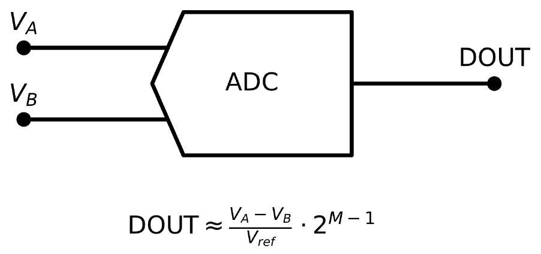
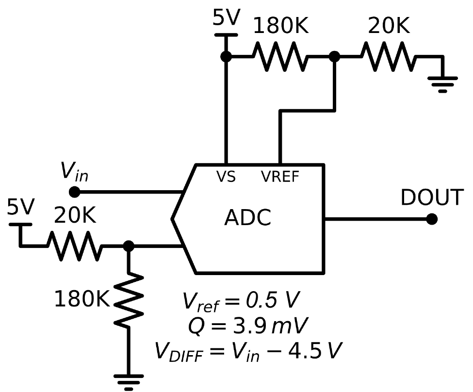
ADC channels and modes of operation
Which pin, how often, how many times
An MCU usually has one ADC but many pins that can reach it through a selector switch (a multiplexer). Only one pin is measured at a time.
You also choose how it measures: once on request, continuously at a fixed rate, many times averaged together, or visiting several pins in turn. Continuous sampling must be fast enough, or a fast signal masquerades as a slow one.
- Channels: the ADC input can be routed internally to several external pins. The nRF52832 has 8 input channels,
AIN0toAIN7. Only one channel is converted at a time. - One-shot: a single sample is taken. Ideal for low power: wake up, sample, sleep.
- Continuous: samples are taken at a sampling frequency fs. Nyquist theorem: to represent a signal accurately,
fs > 2 · fmaxOtherwise high frequencies fold down into false low ones (aliasing), which cannot be undone afterwards. That is why a low-pass (anti-aliasing) filter usually sits in front of the ADC.
- Oversampling: sample faster than Nyquist requires and average. Random noise shrinks with √N: averaging 4 samples halves it, gaining roughly one extra bit.
- Scan: cycle through multiple channels to measure several inputs "in parallel". It is really sequential, so each channel gets a share of the total sample rate.
Digital-to-Analog Converter (DAC)
Numbers in, voltage out
The reverse of an ADC. A song on your phone is just a long list of numbers; a DAC turns those numbers back into the smoothly wiggling voltage that moves a speaker.
- A DAC converts a digital signal (series of numbers) into an analog signal (a voltage). It creates a continuous signal out of discrete-time data.
Vout = DOUT / 2M · Vref
- Each value is held until the next one arrives (a zero-order hold), which produces a staircase. A reconstruction low-pass filter smooths it into a continuous waveform.
- More bits give smaller steps in voltage; a higher sample rate gives shorter steps in time. Both make filtering easier.
- Applications: audio, video, communications (generating wireless or optical waveforms), digitally controlled potentiometers.
- Many low-power MCUs, the nRF52832 included, have no DAC at all. A low-pass filtered PWM output (Part 3) is the cheap substitute.
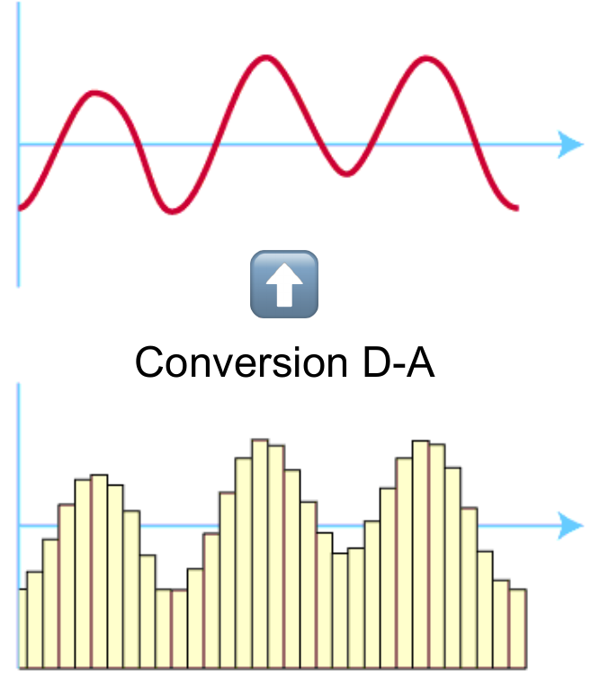
Power control and PWM
Power control with a series resistor
The naive way to dim a load
Want a lamp at half power? The naive way: put a variable resistor in series to "eat" some of the voltage. It works, but the resistor turns everything it eats into heat.
At its worst it wastes as much energy as the lamp actually uses.
- R2 is the load; R1 is a variable resistor (or a transistor used as one) that controls the power reaching the load. This is a voltage divider:
Vout = Vin · R2 / (R1 + R2)
- R1 « R2: the voltage drop across R1 is negligible, so its power is negligible (but you are not dimming much).
- R1 » R2: the current is negligible, so R1's power is negligible (but the load gets almost nothing).
- R1 = R2: R1 consumes as much power as the load. In general
efficiency = Pload / Ptotal = R2 / (R1 + R2)
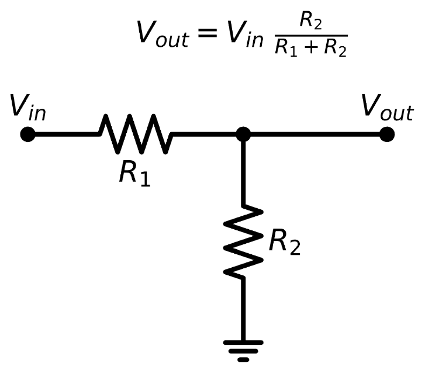
Pulse Width Modulation (PWM) and dimming an LED
Switch fast, let the load average
Instead of wasting energy in a resistor, flick the switch on and off very fast. On 25% of the time means the load gets 25% of the power on average.
Your eye is too slow to follow the flashing, so it averages the light: you see a dim LED, not a blinking one. Your eye is acting as a low-pass filter.
- Dimming an LED: turn it on and off at a high frequency. The human eye cannot capture fast changes in brightness (it has inertia, a short-term memory), so it averages them: a low-pass filter.
- A PWM signal is an on/off signal with two properties:
frequency f = 1 / T duty cycle D = ton / T
- The average voltage (and, for a resistive load, the average power as a fraction of full power) follows the duty cycle:
Vavg = D · VS
- The frequency must be high enough for the load to average. For LEDs that means at least a few hundred Hz to avoid visible flicker.
- MCUs generate PWM on GPIOs using hardware timers (a counter compared against a threshold), so the CPU is not involved. The nRF52832 has three PWM peripherals with four channels each.
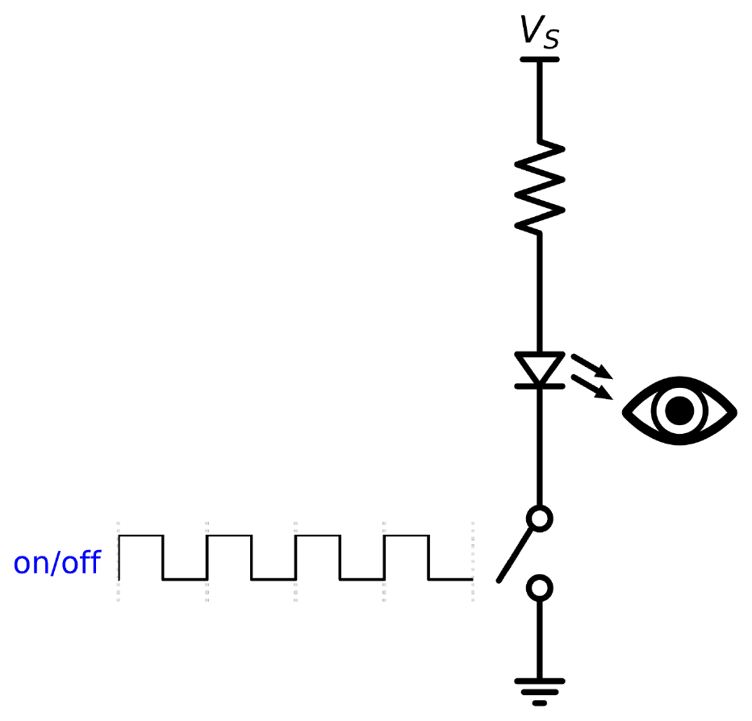
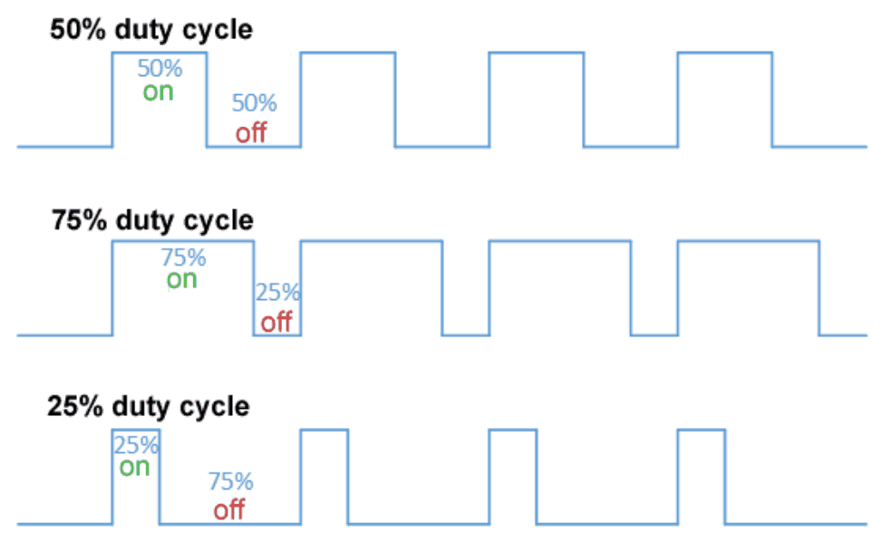
PWM motor control
Why PWM beats a resistor
A motor is like a heavy flywheel: it cannot react to every quick on/off pulse, so it settles at a speed set by the average. More on-time, more speed.
A switch that is either fully on or fully off wastes almost nothing, unlike a resistor. And since a GPIO is far too weak for a motor, a motor driver chip does the heavy switching on the GPIO's command.
- The PWM duty cycle controls the power that goes to the motor.
- Motors are inductive: they react slowly to changes in current (time constant L/R), so the current, and therefore the power, is averaged out. The mechanical inertia smooths the speed further. Motor PWM often runs above about 20 kHz so it cannot be heard.
- Why not control power with a variable series resistor (a transistor in its linear region)?
- Inefficient: the resistor consumes energy.
- Less power reaches the motor.
- Digital signals (PWM) are easier and cheaper to generate than analog ones.
- A fully-on switch has almost no voltage across it; a fully-off switch has no current through it. Either way P = V·I ≈ 0.
- The motor runs from its own supply VM. A driver IC such as the TI DRV8835 (up to 1.5 A per channel) takes the PWM signal from the controller and switches the motor current.
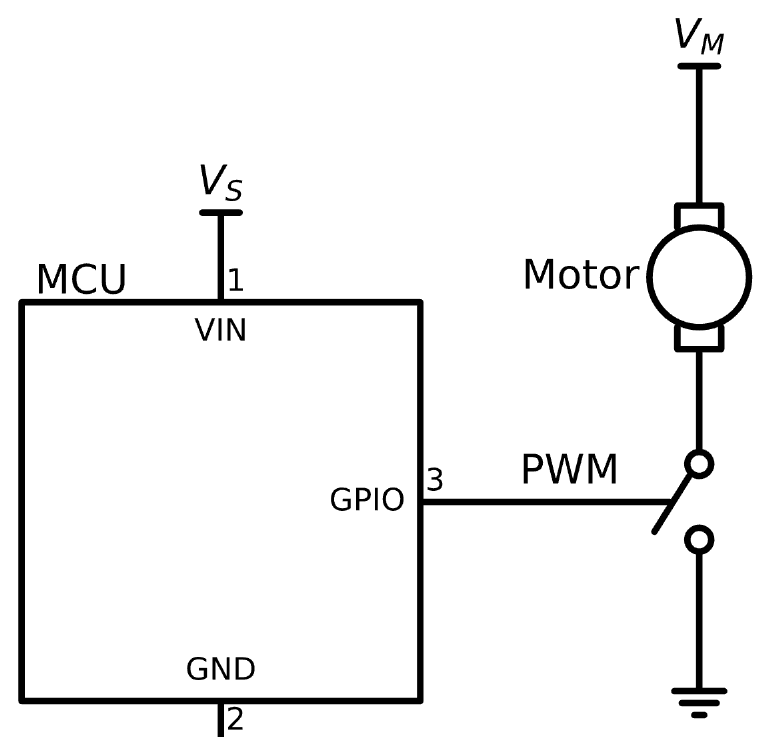
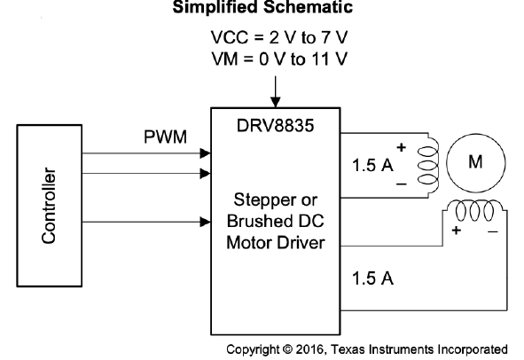
Cheat sheet
Everything you need to calculate, on one card
Logic threshold
With hysteresis: up at VS/2 + VH, down at VS/2 - VH.
Output modes
Open-drain needs a pull-up; the line is a wired-AND.
LED series resistor
Keep I within the pin limit (typically 2 to 12 mA).
Pull resistor current
Flows only while the line is driven against the resistor.
Single-ended ADC
Range [0, 2M - 1]; saturates at Vin ≥ Vref.
Differential ADC
Range [-2M-1, 2M-1 - 1].
Voltage divider
Used for Vref, offsets, and the resistive power-control model.
Nyquist
Below that: aliasing. Oversampling N× cuts random noise by √N.
DAC
Staircase output, smoothed by a low-pass filter.
PWM
Load must be slower than the PWM period (eye, inductance, inertia).
Figures cropped from the lecture slides "MCU Input/Output" by Xenofon Fafoutis, DTU Compute, with their original sources noted. For personal study.